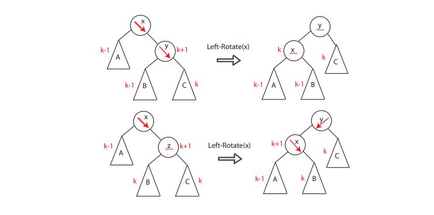
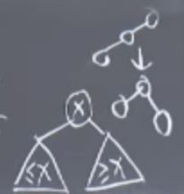
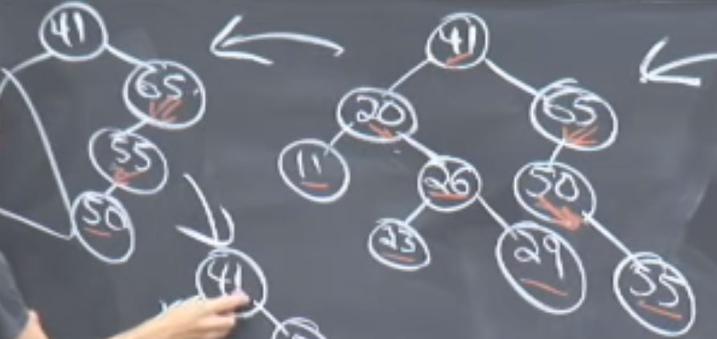

Python Complexity
Lists
L.sort() O(|L|lg|L|)
len(L) O(1)
x in L Linear O(|L|)
Dictionary
D[key] = val O(1) (Hash Table) with high probability(WHP)
算法思路总结
find a 1-d peak
a peak if and only if b ≥ a and b ≥ c. Larger than adjacent pixel.
• If a[n/2] < a[n/2 − 1] then only look at left half 1 . . . n/2 − − − 1 to look for peak
• Else if a[n/2] < a[n/2 + 1] then only look at right half n/2 + 1 . . . n to look for peak
• Else n/2 position is a peak
find a 2-d peak
• Pick middle column j = m/2
• Find global maximum on column j at (i, j)
• Compare (i, j − 1),(i, j),(i, j + 1)
• Pick left columns of (i, j − 1) > (i, j)
• Similarly for right
• (i, j) is a 2D-peak if neither condition holds
• Solve the new problem with half the number of columns.
• When you have a single column, find global maximum and you‘re done.
Inserting Sort
insert A[i] into sorted array A[0:i-1]
Binary search with take Θ(log n) time. However, shifting the elements after insertion will still take Θ(n) time.
Complexity: Θ(n log n)
MERGE-SORT
A[1 . .n]
If n = 1, done (nothing to sort).
Otherwise Divide and recursively sort
conquer A[ 1 . .n/2 ] and A[n/2+1 . . n ]
“Merge” the two sorted sub-arrays.
Complexity of Merge: Θ(n) 因为每个元素都要被进行至少一次的比较，所以是Θ(n).
T(n) = 2T(n/2) + Θ(n)
那么一共有 log( n ) + 1 levels; n leaves
Complexity: Θ(n log n)
MERGE-SORT VS Inserting Sort
For Merge-sort, you have to make a copy of two part： L and R, do the recurrision and take the results into sorted array A.
In Merge-sort, you needed Θ(n) auxiliary space. Inserting sort:
In-Place Sort
Heap
Heap定义： An array, visualized as a nearly complete binary tree.
root of tree: first element (i=1)
parient: i/2
left: 2i
right: 2i + 1
max-heap定义: 所谓max-heap，就是parient的值比他的children的值都大； 4 2 1就可以写作max-heap；注意：heap并不是binary-tree，所以他的左children和右children并没有区别。
max-heapify: correct a single violation of the heap property in a subtree at its root
Assume that the trees rooted at left(i) and right(i) are max-heaps
max-heapify（A, i）意思是对于Array A，其第i个节点违背了max-heap的定义； 于是看向自己的child，并和biggerchild的值进行交换
看向自己的交换后的child，是否交换后还满足max-heap的定义，如果不是，继续exchange。
Complexity O(log n). 由于the height of this visualization tree is bounded by log n， 且我们之前还做了假设，假设the trees rooted at left(i) and right(i) are max-heaps， 所以每一层最多会进行一次交换，因此Complexity O(log n)
heap-based sorting algorithm
Convert A[1..n] into a max-heap
for i=n/2 downto 1:
do max-heapify(A,i)
# 从i/2 减小到1是因为，leaves are good, 我们就满足了之前的假设（Assume that the trees rooted at left(i) and right(i) are max-heaps）
# Every time you call the max-heapify, you will satify the prerequests
Complexity O(nlog n)
We have n/4 nodes with level 1, n/8 with level 2, and so on till we have one root node that is lg n levels above the leaves
This means that Build_Max_Heap is O(n)
Binart-Search Tree
Runway Reservation System
• Airport with single (very busy) runway (Boston 6 → 1)
• “Reservations” for future landings
• When plane lands, it is removed from set of pending events
• Reserve req specify “requested landing time” t
• Add t to the set if no other landings are scheduled within k minutes either way.
Assume that k can vary
find-min() : Always go to the left
New Requirement
Rank(t): How many planes are scheduled to land at times ≤ t?
Augmented Binary Search Tree
subtree sizes: the number of nodes that are underneath you
1. Walk down tree to find desired time
2. Add in nodes that are smaller
3. Add in subtree sizes to the left
因为左边的node都比parient小
AVL Tree, AVL Sort
AVL Tree is used to keep tree balanced.
binart search tree numbers are places in sorted order:(in-order traversal)
You look at a node; You recursively visit the left child; Then you print out the root; then you recursively visit the right child
We call a tree balances if the height is O( logn )
height of a node: Longest path from that node to the leaf $ = max\left\{height(left child), height(right child)+1\right\}$
AVL Tree worst case: When right subtree has height 1 more than left for every node.对于每个node来说，右侧的树的高度总比左侧树的高度大1
Let $N_h$ = min # nodes in height-$h$ AVL tree. 当树的高度为h的时候，最小的node数目
$h ≈ \log{n} ≈ 1.440 \log n$
Rotate
If x's right child is right-heavy or balanced, we do LR(x), left rotation of x
It shows like the first row
If x is right-heavy and z is left-heavy, we do right-rotation first and do left-rotation next. It shows like the second row



对于ZigZag这种形式的node，可以先将其转化为单边的，然后再按照上面的方法把它旋转为subtree的形式
Complexity
AVL Sort
- Inset n items. Each insert take $h$ time, now we guarantee that after rotation, $h = O(n)$. 所以：$\Theta(n\lg(n))$
- in-order traversal - $\Theta{(n)}$
Comparison model
特点: the only operation allowed is comarision. Time cost is just the number of comparisions
Lower bounds
Claim
• searching among n preprocessed items requires $\Omega(\lg n)$ time
=⇒ binary search, AVL tree search optimal
• sorting n items requires $\Omega(n \lg n)$
=⇒ mergesort, heap sort, AVL sort optimal
– searching: $\Omega(\lg n)$
– sorting: $\Omega(n \lg n)$
为了突破这个linear sorting boundary，有以下几个方法： counting sort; Radix Sorts.
For Radix Sort, each column is used (Counting Sort)
Complexity Counting Sort: $\Omega{(n+k)}$, if integer is frmo $0 ... k-1$
Hashing Table
Insert Item; Delete Item and Search for a Key
D[key] # search
D[key] = val # insert
del D[key] # delete
item = (key, value)
Badness: 1: Keys may not be integers. 2: gigantic memory hog
Solution: 1: maps keys to non-negative integers. 2.in theory, kesy are finite and discrete
Collision: When two different keys map to the same item in table, Collision happens
Chaining
Linked lists if colliding elements in each slot of hash table
Simple Uniform Hashing
Suppose: Each key is equally likely to be hashed to any slot of the table, independently of where other keys hashing. This implies that expected running time for search is $\Theta(1+α)$ — the 1 comes from applying the hash function and random access to the slot whereas the α comes from searching the list
Hash function
Division Method:
$$h(k) = k \mod m$$
Multiplication Method:
$$h(k) = [(a · k) \mod 2w] >> (w − r)$$
How Large should Table be?
• want m = Θ(n) at all times: we want at least a constant of n in order to make alpha be a constant
• don’t know how large n will get at creation
• m too small =⇒ slow; m too big =⇒ wasteful
Then, How to Choose m ?
Idea:Start small (constant) and grow (or shrink) as necessary
Grow Table: $(n>m)$
⇒ make table of size $m'$
⇒ build the new hash function $h'$
D[key] # search
for item in old table:
insert into new table
⇒ rehash
Complexity:$\Theta{(n+m+m')}$, pay m to visit every slot, pay n to visit all the lists and pay $m'$ to build the new table and initialize it to all null
How much the table?
$m' = 2m$ Double the table size
n inserts cost $\Theta{(1 + 2 + 4 + 8 + · · · + n)} = \Theta(n) $
where n is really the next power of 2
Amortization
“T(n) amortized” roughly means T(n) “on average”
inserting into a hash table takes O(1) amortized time
Table Double
当Table的size大于原来的时候，要将table的size变成原来的两倍
eg: 8 items, 当加入9th item，table变为16；然后我们再把9th item删掉，这时又把table shrink 成了$size = 8$
Delete
I do n inserts, and then I do n deletes. Then m is equal to the max value of n over time。为了解决这个问题，when n decreases to ${m \over 4}$, shrink to half the size =⇒ $O(1)$ amortized cost for both insert and delete
Complexity
Simple Algorithm:
any(s == t[i : i + len(s)] for i in range(len(t) − len(s)))
— O(|s|) time for each substring comparison
=⇒ O(|s| · (|t| − |s|)) time
= O(|s| · |t|) potentially quadratic
比如说：我们要在string t 中寻找 string s， 其实string s每次只是把最开始的那个元素pop出来，然后append新的元素到队尾。设r(): reasonable hash function h(x) on string x。我们是加上是在找hash function互相match的两个string --- > rs() == rt()。在这个算法里，一共有俩rolling hashm rt() 和rs()，实际上，我们是先看在rt中，哪里能找到和第一个rs的元素一样的元素，然后再去比较s的第二个元素存在t中的哪里
Karb-Rabin Algorithms